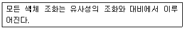
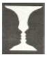
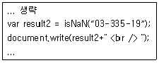

멀티미디어콘텐츠제작전문가 (2015-03-08 기출문제)
1과목: 멀티미디어개론
1. 2012년 영국의 학교 재단에서 기초 컴퓨터 과학 교육을 증진시키기 위해 만든 싱글보드 컴퓨터로 25~35달러의 저렴한 가격, 그래픽 성능이 뛰어난 장점, 리눅스 기반 운영체제를 이식할 수 있는 싱글보드 컴퓨터는?
- 비글
- 라즈베리파이
- 비틀즈
- MEC
(정답률: 82%)

2. TFTP(Trivial File Transfer Protocol)에 대한 설명으로 거리가 먼 것은?
- FTP보다 단순한 네트워크 어플리케이션이다.
- TCP 80번 포트를 이용한다.
- 패스워드 없이 접속하여 파일을 가져올 수 있다.
- 임베디드 시스템에서 운영체제 업로드로 주로 사용된다.
(정답률: 68%)
3. 웹과 인터넷 등의 가상 세계가 현실 세계에 흡수된 형태이며, 가상세계 서비스로 “세컨드라이프” 등이 대표적으로 기존의 가상현실(VR)보다 진보된 개념은?
- AaaS
- Grid
- Metaverse
- Splogger
(정답률: 82%)
4. 해커의 분류에 있어서 최고 단계의 해커로 스스로 새로운 취약점을 발견하고, 이에 대한 해킹 코드를 스스로 작성할 수 있는 해커 레벨은?
- Newbie
- Kids
- Nemesis
- Scripter
(정답률: 77%)
5. 프로그램 솔루션으로 피그와 하이브가 있고, 구성요소로 분산파일 시스템과 맵리듀스 이외에 다양한 기능을 구성하는 시스템으로 구성되어 있으며, 대규모 데이터 처리가 필수적인 구글, 야후 등 대용량의 데이터 처리를 위해 개발된 오픈소스 소프트웨어는?
- CCL
- Hadoop
- Cloud Computing
- XML
(정답률: 78%)
6. 모바일 환경에서 영상검색을 하기 위해 간략화하면서도 확장성 있는 메타데이터 표준 기술은?
- MPEG-7 CDVS
- MPEG-2 CD
- MPEG-9
- MPEG-1
(정답률: 80%)
7. 정보확산으로 인한 각종 부작용으로 추측이나 루머가 결합된 부정확한 정보가 인터넷이나 휴대전화를 통해 전염병과 같이 빠르게 전파됨으로써 개인 사생활, 경제, 정치 안보 등에 치명적인 영향을 초래하는 것을 의미하는 용어는?
- Hadoop
- webaholism
- trackback
- infodemics
(정답률: 70%)
8. UNIX 시스템에서 서버에 현재 login한 사용자의 정보를 알 수 있게 해주는 명령어는?
- linare
- ping
- ftp
- finger
(정답률: 78%)
9. HD-DVD에 대한 설명으로 틀린 것은?
- AOD(Advanced Optical Disc) 기술에 기초하고 있다.
- 카트리지를 사용해야 한다.
- 기존 DVD 용량의 5~8배 크기이다.
- 레이저 파장은 4⑤nm의 블루 레이저이다.
(정답률: 69%)
10. 음의 세기(sound intensity) 단위는?
- W/m2
- erg/m2
- kgf
- W2/㎝
(정답률: 76%)
11. 전자메일시스템을 구성하는 요소로 거리가 먼 것은?
- MUA(Mail User Agent)
- MDA(Mail Delivery Agent)
- MTA(Mail Transfer Agent)
- MSA(Mail Server Agent)
(정답률: 62%)
12. IEEE 802.11 무선 LAN의 매체접속제어(MAC) 방식은?
- CSMA/CD
- CSMA/CA
- token bus
- ICMP
(정답률: 70%)
13. 스니핑(Sniffing)에 해당하는 설명으로 옳은 것은?
- IP주소, 로그인화면 등을 속이는 것을 말한다.
- 컴퓨터 네트워크 상의 트래픽을 엿보는 행위를 말한다.
- 네트워크 블록 전체를 스캐닝하여 취약점을 찾는 방법이다.
- 거짓 패킷을 지속적으로 보내어 시스템을 마비시키는 것을 말한다.
(정답률: 71%)
14. 비연결지향 전송계층 프로토콜은?
- UDP
- TCP
- ICMP
- SMTP
(정답률: 71%)
15. UNIX에서 파일 소유자의 식별번호, 파일크기, 파일의 최종 수정시간, 파일의 링크 수 등의 태용을 가지고 있는 것은?
- inode
- super block
- mounting
- boots
(정답률: 83%)
16. 각 픽셀을 박막 트랜지스터(TFT)로 작동하게 하는 능동형 유기 발광 다이오드로, 전력 소모가 상대적으로 적으며 더 정교한 화면을 구현할 수 있는 장점이 있는 것은?
- LCD
- AMOLED
- PMOLED
- CRT
(정답률: 80%)
17. 44.1[kHz]로 샘플링한 CD의 경우 이론적으로 재생할 수 있는 최대 주파수에 가장 근접한 주파수[kHz]는?
- 22
- 13
- 10
- 5
(정답률: 77%)
18. 다음 중 무선 네트워크를 위한 국제 표준은?
- IEEE 802.8
- IEEE 802.9
- IEEE 802.10
- IEEE 802.11
(정답률: 67%)
19. 정보보호를 위한 암호화에 대한 설명으로 거리가 먼 것은?
- 평문 - 암호화도기 전의 원본 메시지
- 암호문 - 암호화가 적용된 메시지
- 키(Key) - 적절한 암호화를 위하여 사용하는 값
- 복호화 - 평문을 암호문으로 바꾸는 작업
(정답률: 83%)
20. IP 논리주소를 MAC 물리주소로 변환시켜주는 프로토콜은?
- FTP
- ARP
- SMTP
- UDP
(정답률: 67%)
2과목: 멀티미디어기획및디자인
21. 푸르킨예 현상(Purkinje effect)에 대한 설명 중 가장 거리가 먼 것은?
- 눈의 추상체가 낮에만 반응하기 때문에 생기는 현상이다.
- 파란 색의 공이 밤에는 밝은 회색처럼 보이는 현상이 이에 속한다.
- 밝은 곳에서 어두운 곳으로 갈수록 단파장의 감도가 높아진다.
- 점차 밝아질수록 장파장의 감도가 떨어진다.
(정답률: 49%)
22. 붉은 망에 들어간 귤의 색이 본래의 주황보다도 붉은 색을 띠어 보이는 효과는?
- 스푸마토(sfumato) 효과
- 플루트(flute)효과
- 베졸드(bezold) 효과
- 팬텀컬러(phantom color) 효과
(정답률: 71%)
23. 디자인 요소 중 점에 대한 설명으로 거리가 먼 것은?
- 점은 움직임을 지각하지 못하지만 크기와 군집에 의해 방향성이 느껴지기도 한다.
- 점은 작을수록 점처럼 보이며 클수록 면처럼 보인다.
- 점은 위치를 표시한다.
- 점은 원형으로만 표현된다.
(정답률: 69%)
24. 게슈탈트의 심리법칙 중 거리가 가까운 요소끼리 하나의 묶음으로 보이는 것은?
- 근접성의 원리
- 폐쇄성의 원리
- 유사성의 원리
- 연속성의 원리
(정답률: 77%)
25. 한국의 오방색의 방향과 색이 맞는 것은?
- 동 - 청색
- 서 - 적색
- 남 - 황색
- 북 - 백색
(정답률: 74%)
26. 편집디자인과 거리가 가장 먼 것은?
- 사진
- 애니메이션
- 일러스트레이션
- 타이포그래피
(정답률: 65%)
27. 여러 가지 색이 조밀하게 놓여있어 혼색되어 보이는 경우를 말하는 것으로 TV의 영상화면이나 모자이크, 신인상파의 점묘법에서 사용된 혼색법은?
- 병치혼합
- 계시혼합
- 감산혼합
- 회전혼합
(정답률: 75%)
28. 다음은 누구의 색채조화론에 대한 설명인가?

- 뉴튼
- 괴테
- 슈브뢸
- 베졸드
(정답률: 68%)
29. 자연현상에서 빨간 열매와 파란 잎의 싱그러운 대비는 어떤 조화에 해당하는가?
- 안정색의 조화
- 반대색의 조화
- 유사 조화
- 등간격 3색의 조화
(정답률: 78%)
30. 먼셀의 표기법에 10RP 7/8은 무슨 색인가?
- 빨강
- 보라
- 분홍
- 자주
(정답률: 50%)
31. 큐비즘에 영향을 받은 몬드리안이 전개한 운동은?
- 큐비즘 운동
- 팝아트 운동
- 데스틸 운동
- 미술공예 운동
(정답률: 64%)
32. 팽창색과 수축색에 대한 설명으로 가장 거리가 먼 것은?
- 따뜻한 색은 외부로 확산하려는 팽창색이다.
- 명도가 높은 색은 내부로 위축되려는 수축색이다.
- 차가운 색은 내부로 위축되려는 수축색이다.
- 색채가 실제의 면적보다 작게 느껴질 때 수축색이다.
(정답률: 73%)
33. 아래 그림에 대한 착시현상은?

- 대비의 착시
- 모순 도형의 착시
- 다의 도형에 의한 착시
- 일시적 착시
(정답률: 69%)
34. 면적대비에 대한 설명으로 옳은 것은?
- 같은 색이라도 면적이 좁은 쪽이 넓은 쪽 보다 명도가 높게 느껴진다.
- 같은 색이라도 면적이 좁은 쪽이 넓은 쪽 보다 채도가 높게 느껴진다.
- 면적의 크고 작음에 의해서 색이 다르게 보이는 현상을 면적대비라고 한다.
- 배색에서 넓은 면적은 채도가 높은 색, 좁은 면적은 채도가 낮은 색이 효과적이다.
(정답률: 62%)
35. 형태의 시각적 특성으로써 비례에 대한 설명으로 거리가 가장 먼 것은?
- 황금분할은 모듈러의 개념으로 1:1.414이다.
- 비례란 개념적으로 시각적 질서나 균형을 결정하는데 쓰인다.
- 황금 분할은 그리스 시대부터 미적인 비례의 전형으로 사용되었다.
- 이상적인 비례로는 루트, 피보나치수열, 황금분할 등이 있다.
(정답률: 70%)
36. 디자인 영역 분류 중 대표적인 4차원 영역은?
- 영상 디자인
- POP 디자인
- 어패럴 디자인
- 사인 디자인
(정답률: 69%)
37. 디자인의 원리 중 반복, 강조, 점이 등을 통해 얻어지는 것은?
- 균형
- 대칭
- 대비
- 율동
(정답률: 66%)
38. 색채의 진출, 후퇴와 팽창, 수축에 대한 설명으로 거리가 가장 먼 것은?
- 진출색은 황색, 적색 등의 난색계열이다.
- 팽창색은 명도가 낮은 어두운 색이다.
- 수축색은 한색계열이다.
- 후퇴색은 파랑, 청록 등의 한색계열이다.
(정답률: 71%)
39. 배색의 구성요소가 아닌 것은?
- 기조색
- 주조색
- 강조색
- 분리색
(정답률: 71%)
40. 앙포르멜적 추상 일러스트레이션에 대한 설명으로 맞는 것은?
- 직선, 삼각형, 원 등의 기하학적인 형태를 이용한 일러스트레이션
- 자연계에서 찾아볼 수 있는 형태를 이용한 일러스트레이션
- 인물이나 경치 등을 주관성 없이 극사실화 하는 일러스트레이션
- 우연성이 강한 터치나 마티에르 등에 의한 비구상적 일러스트레이션
(정답률: 59%)
3과목: 멀티미디어저작
41. 자바스크립트의 문자열 형태로 나타낸 숫자들(예＞ “123”)을 정수나 실수 타입으로 인식하도록 변환하는 역할의 내장 객체가 아닌 것은?
- String
- Number
- parseInt
- parseFloat
(정답률: 60%)
42. 아래의 관계 대수를 SQL로 옳게 나타낸 것은?
- SELECT 이름, 학과 FROM 학년 WHERE 학과 = '컴퓨터';
- SELECT 이름, 학년 FROM 학생 WHERE 학과 = '컴퓨터';
- SELECT 이름, 학년 FROM 학과 WHERE 학생 = '컴퓨터';
- SELECT 학과, 컴퓨터 FROM 학생 WHERE 이름 = '학년';
(정답률: 71%)
43. 객체지향기법에서 객체가 메시지를 받아 실행해야 할 객체의 구체적인 연산을 정의한 것은?
- Entity
- Method
- Instance
- Class
(정답률: 74%)
44. Jquery에서 마우스가 선택영역에 오버되거나 아웃될 때 각각의 함수를 실행하는 것은?
- reset()
- dbclick()
- hover()
- focus()
(정답률: 66%)
45. DOM과 이벤트 처리에 관련된 작업을 쉽고 단순하게 하는 선택자 문법을 제공하며, 모든 브라우저에서 동작하는 클라이언트 자바스크립트 라이브러리의 이름은?
- css
- html5
- jquery
- php
(정답률: 66%)
46. 데이터베이스에서 뷰(view)에 대한 설명으로 거리가 먼 것은?
- 뷰 위에 또 다른 뷰 정의 기능
- 독자적인 인덱스를 가지기 때문에 검색 속도 향상 기능
- 뷰가 정의된 기본 테이블이 삭제되면 뷰도 자동 제거
- 데이터의 접근을 제어하게 함으로써 보안 제공
(정답률: 48%)
47. 자바스크립트의 Window 객체매서드에 대한 설명으로 잘못된 것은?
- confirm() : 사용자에게 확인을 필요로 하는 대화상자 실행
- prompt() : 사용자로부터 입력 메시지를 받을 수 있는 대화상자 표시
- find() : 윈도우에 포함된 텍스트 검색
- alert() : 전달받은 값이 숫자인지 문자인지 판별한 결과를 출력
(정답률: 66%)
48. 객체지향분석 모델인 Rambaugh의 OMT(Object Modeling Technique)에서 자료 흐름도를 이용한 것은?
- Relational Modeling
- Object Modeling
- Functional Modeling
- Dynamic Modeling
(정답률: 47%)
49. DOM 구조에서 하위 요소에 발생한 이벤트가 상위 요소에 전달되는 과정을 일컫는 용어는?
- 이벤트 버블링
- 이벤트 디폴트
- 이벤트 캡처링
- 이벤트 핸들링
(정답률: 58%)
50. 다음 자바스크립트 코드의 결과값은?

- 0333519
- 03-335-19
- false
- true
(정답률: 51%)
51. 객체지향 분석 방법론의 설명으로 옳은 것은?
- 부치(Booch) 객체지향 설계는 객체들 간의 인터페이스를 찾아 이것들을 Ada 프로그램으로 변환시키는 기법이다.
- Jacobson 객체지향 설계는 분석과 설계 프로세스 간에 뚜렷한 구분이 없고 고객 명세의 평가로 시작하여 설계로 끝나는 연속적인 프로세스로 접근한 방법이다.
- 람바우(Rambaugh) 객체지향 설계는 사용자가 제품 또는 시스템과 어떻게 상호 작용하는지를 서술한 시나리오로 접근한다.
- 윌리엄 로렌슨 객체지향 설계는 자료흐름도를 사용해서 객체를 분해하고 각 작업에 대한 다이어그램, 클래스 계층 정의, 클래스들의 클러스터링 작업을 수행한다.
(정답률: 47%)
52. 현재 html 문서에서 id가 test인 엘리먼트를 선택하는 jquery 표현식은?
- $( 'test' )
- $( '!test' )
- $( '_test' )
- $( '#test' )
(정답률: 65%)
53. 자바스크립트 코드를 html 파일에 집어넣기 위해 사용하는 태그는?
- BODY
- HEAD
- NOSCRIPT
- SCRIPT
(정답률: 71%)
54. XML 문서 내에 있는 데이터필드 및 텍스트들의 위치를 찾아내고 걸러내기 위한 언어는?
- XQL
- DOM
- XLink
- XPL
(정답률: 60%)
55. XML의 DTD에서 주어진 엘리먼트 타입의 속성들을 지정하고, 속성 타입의 제한요소를 설정하기 위해서 제공되는 속성의 기본 유형이 아닌 것은?
- #MIXED
- #FIXED
- #REQUIRED
- #IMPLIED
(정답률: 49%)
56. 자바스크립트에서 Window 객체의 Layer 속성으로 틀린 것은?
- left
- bgcolor
- height
- parentLayer
(정답률: 49%)
57. 자바스크립트의 내장 객체 중 최상위 객체이고, 현재 화면에 출력되는 창에 대한 정보를 제공하는 객체는?
- location
- bistory
- screen
- window
(정답률: 72%)
58. 자바스크립트의 생성자 함수를 이용하여 객체를 생성할 때 사용하는 예약어는?
- fuction
- instance of
- typeof
- new
(정답률: 74%)
59. 공간 데이터베이스를 위한 공간 인덱싱 기법 중 점, 선, 다각형 객체를 모두 지원 가능한 것은?
- R-트리
- 메트릭스 쿼드 트리
- K-D 트리
- K-D-B 트리
(정답률: 58%)
60. 데이터베이스 시스템 카탈로그 구성 요소가 아닌 것은?
- SYSCOLUMNS
- SYSTABLES
- SYSCONTENTS
- SYSVIEW
(정답률: 60%)
4과목: 멀티미디어제작기술
61. 지향성 마이크를 음원에 가깝게 배치하면 저음이 상승하는 효과는?
- 양의효과
- 근접효과
- 청감곡선
- 마스킹현상
(정답률: 73%)
62. 빛은 그 파장의 차이에 따라 굴절률이 각각 다른데 프리즘을 투과한 빛이 각각의 굴절각의 차이로 여러 가지 색으로 나누어지는 현상은?
- 간섭
- 편광
- 회절
- 분산
(정답률: 69%)
63. 2장 이상의 사진을 중복인화, 중복노출시킴으로서 한 장으로 합성시켜 새로운 시각효과를 구성하는 작품 제작기법은?
- 포토그램
- 포토몽타주
- 이중인화
- 솔라리제이션
(정답률: 50%)
64. 16비트 디지털오디오의 다이내믹 레인지로 적절한 것은?
- 약 96dB
- 약 106dB
- 약 128dB
- 약 256dB
(정답률: 48%)
65. 인형을 단계적으로 조금씩 조작하면서 조작된 인형을 한 프레임씩 촬영하는 기법은?
- 스톱모션
- 모핑
- 트위닝
- 절차 애니메이션
(정답률: 74%)
66. 양자화 잡음에 대한 설명으로 거리가 먼 것은?
- 양자화 스텝이 클수록 양자화 잡음은 줄어든다.
- PCM통신에서 대부분을 차지하는 잡음이다.
- 입력신호가 있을 때 발생한다.
- 연속적인 신호를 불연속적인 신호로 변환 시 발생하는 잡음이다.
(정답률: 58%)
67. 홀로그램은 주로 빛의 어떠한 현상을 이용하는가?
- 굴절
- 편광
- 반사
- 간섭
(정답률: 49%)
68. 웨이블릿 변환과 가장 관계있는 표준은?
- H.263
- JPEG 2000
- MPEG-7
- MPEG-21
(정답률: 58%)
69. 동일 음이 여러 방향에서 같은 음량으로 전달되는 경우, 가장 빠르게 귀에 도달하는 음의 음원방향으로 음상의 정위자가 쏠려 들리는 현상은?
- 하스 효과
- 칵테일 효과
- 코러스 효과
- 도플러 효과
(정답률: 67%)
70. 호주의 블리스(C.K.Bliss)가 발명한 것으로 블리스 심볼릭스(Blissymbolics)라고도 불리우는 국제적인 그림문자 시스템은?
- 아이소타입(Isotype)
- 시멘토그래피(SementoGraphy)
- 포노그램(Phonogram)
- 픽토그램(Pictogram)
(정답률: 59%)
71. 컴퓨터그래픽에서 3차원 입체 형상 모델링의 표현 방식이 아닌 것은?
- 와이어프레임 모델링(Wireframe Modeling)
- 곡면기반 모델링(Surface Modeling)
- 솔리드 모델링(Solid Modeling)
- 범프 모델링(Bump Modeling)
(정답률: 53%)
72. 애플사가 매킨토시에서 화상을 비트맵 형식 및 퀵드로(QuickDraw) 벡터 형식으로 저장하는데 사용되는 표준 파일은?
- TIFF
- PICT
- DIB
- DXF
(정답률: 58%)
73. 광도의 단위는?
- cd
- Hz
- kg
- dB
(정답률: 73%)
74. 마이크로폰 지향 특성 중 스튜디오 또는 야외에서 드라마의 수음에 가장 적합한 것은?
- 무지향성
- 양지향성
- 단일지향성
- 초지향성
(정답률: 54%)
75. 광원으로부터 나오는 광선이 직접 또는 반사 및 굴절을 거쳐 화면에 도달하는 경로를 역추적하여 화면을 구성하는 각화소의 빛의 강도와 색깔을 결정하는 렌더링 방법은?
- Z-버퍼링 방법
- 후향면 제거(back-face culling) 방법
- 화가 알고리즘(painter's algorithm) 방법
- 광선 투사(ray tracing) 법
(정답률: 71%)
76. 렌더링 과정 중 데이터 요소로 여러 가지 투명도나 색상 값으로 매핑시켜서 렌더링 하는 것을 무엇이라고 하는가?
- 은면제거
- 쉐이딩
- 텍스쳐링
- 볼륨 렌더링
(정답률: 44%)
77. 1988년 ITU-T에서 원격화상 회의 전화용 부호화방식 H.261의 화상 압축기술이며, 국제표준인 MPEG에 채용된 고능률 영상 부호화 압축기술은?
- PCM 방식
- DCT 변환 부호화
- ADPCM 방식
- 호프만 부호화
(정답률: 36%)
78. 태양이나 밝은 전구같은 강한 광원이 사진에 포함되었을 때 화면상에 조리개 모양의 이미지가 만들어지는 현상은?
- 포깅(Fogging)
- 고스팅(Ghosting)
- 비네팅(Vignetting)
- 이레디에이션(Irradiation)
(정답률: 53%)
79. MPEG-2의 프레임 구조에 속하지 않는 것은?
- Intra Frame
- Forward Frame
- Bidirectionally Frame
- Directionally Frame
(정답률: 52%)
80. 홀(Hall) 내에 설치되는 스피커 시스템으로 거리가 먼 것은?
- 프로세니엄 스피커
- 백도어 스피커
- 에이프런 스피커
- 모니터 스피커
(정답률: 57%)